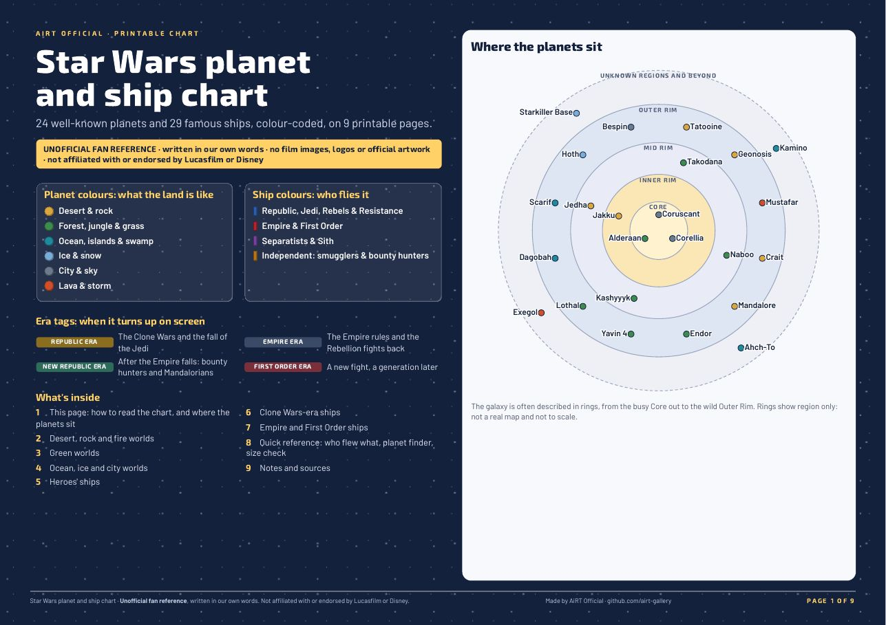
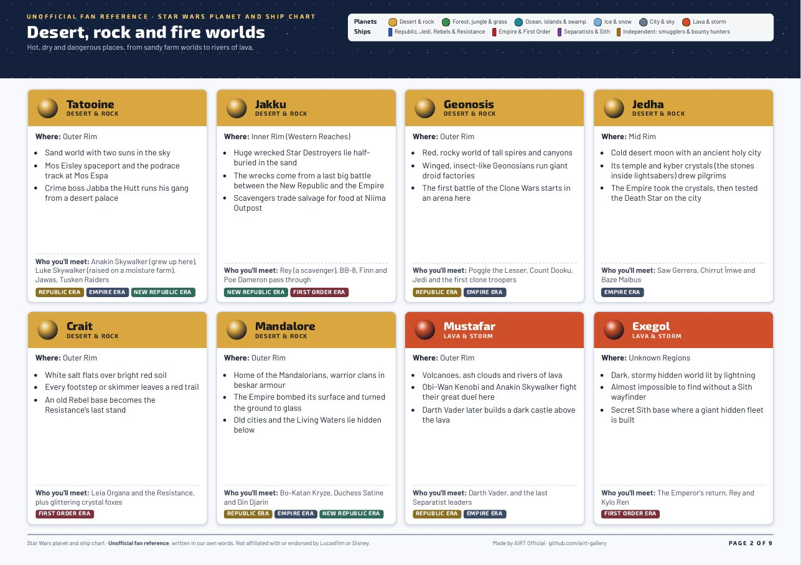
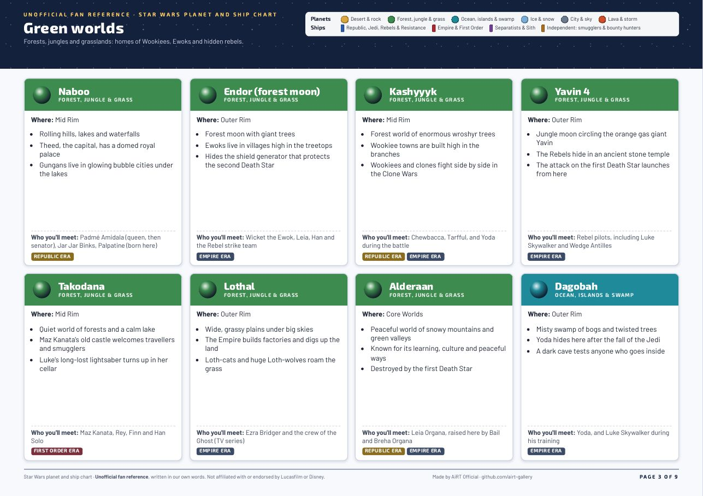
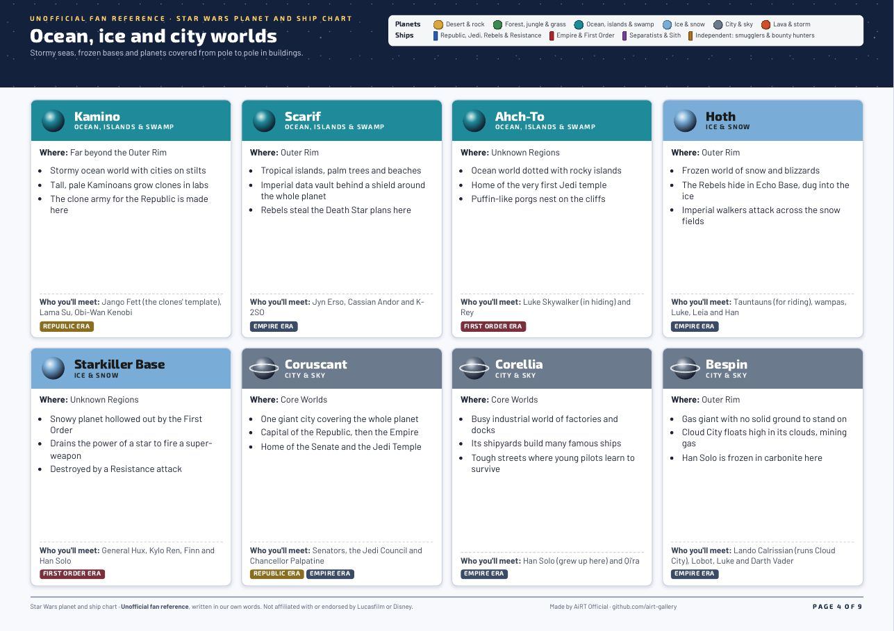
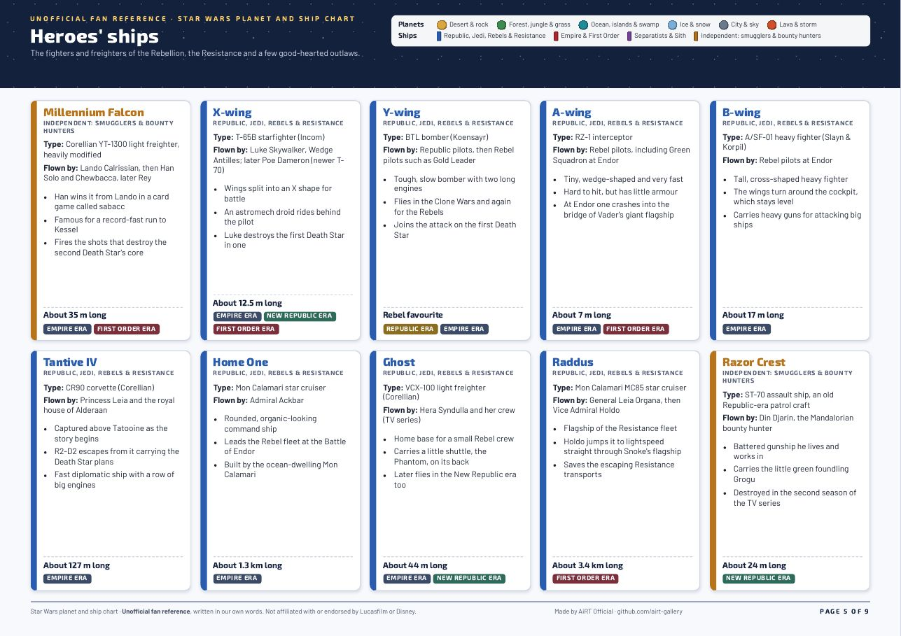
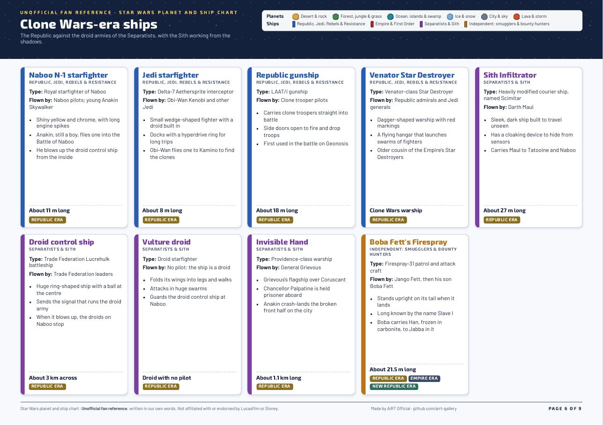
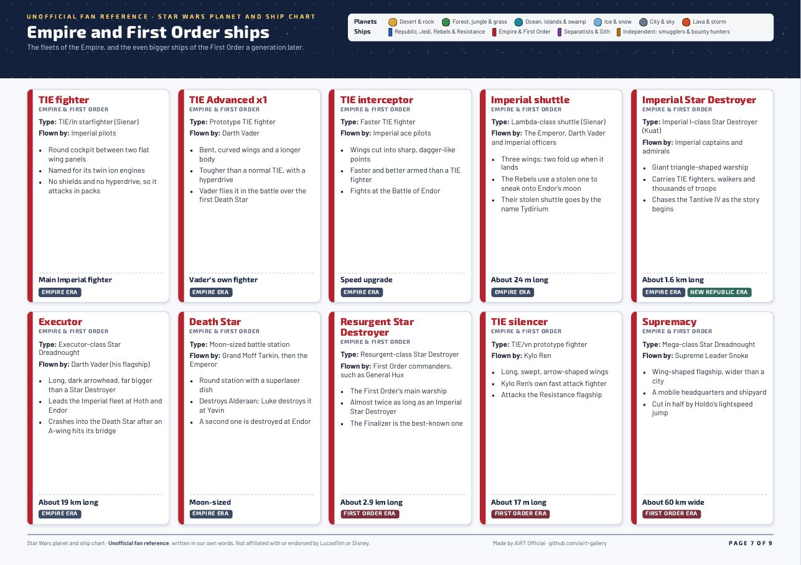
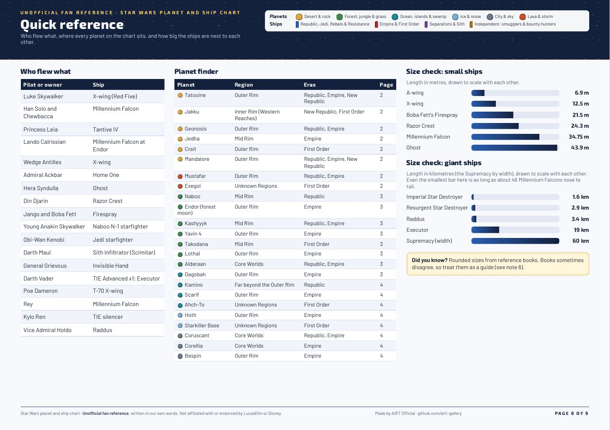
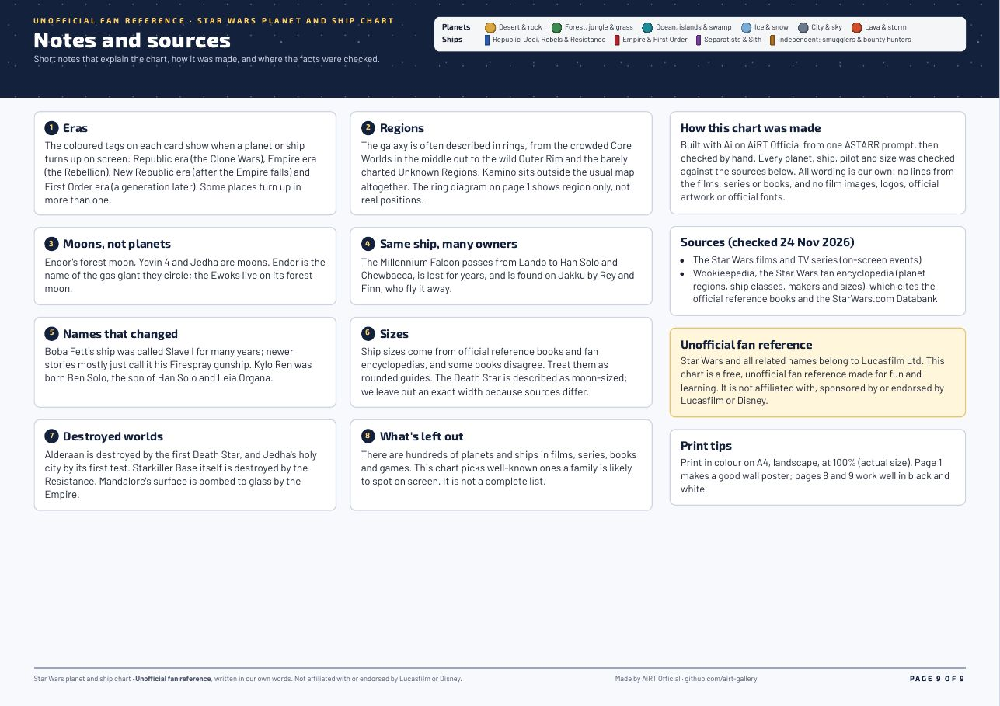

The nine pages


















Print it
Print the PDF in colour on A4, landscape, at 100% (actual size). Page 1 makes a good wall poster.
How it was made
Built with Ai on AiRT Official from one ASTARR prompt, then checked by hand. The prompt is in the GitHub repo.
Fan reference
Star Wars and all related names belong to Lucasfilm Ltd. This free chart is an unofficial fan reference, with no film stills, logos, official artwork or official fonts.